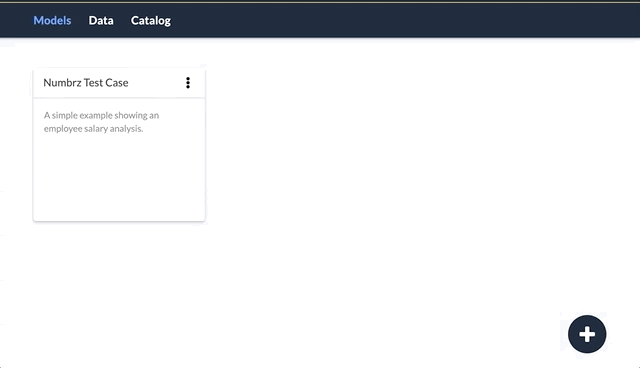

Create a Model
To create a new model, click the + icon in the lower right corner. You can elect to create a new empty model, or select from a number of pre-built templates. Once created, you should give the model a name and description. You can then begin to add content to the model.
See also: About Models, Configure a Model